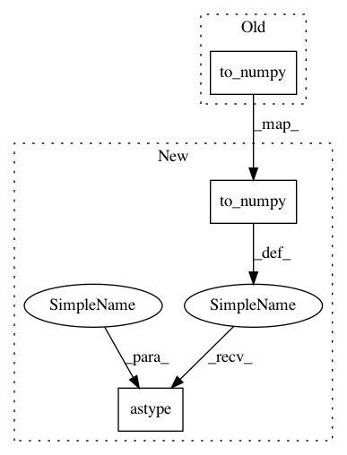

47b9dd041f41ae8929fe64c05cde1bb878b6f6b8,research/object_detection/metrics/oid_challenge_evaluation_utils.py,,build_predictions_dictionary,#,160
Before Change
standard_fields.DetectionResultFields.detection_classes:
data["LabelName"].map(lambda x: class_label_map[x]).to_numpy(),
standard_fields.DetectionResultFields.detection_scores:
data["Score"].to_numpy()
}
if "Mask" in data:
segments, boxes = _decode_raw_data_into_masks_and_boxes(
After Change
standard_fields.DetectionResultFields.detection_classes:
data["LabelName"].map(lambda x: class_label_map[x]).to_numpy(),
standard_fields.DetectionResultFields.detection_scores:
data["Score"].to_numpy().astype(float)
}
if "Mask" in data:
segments, boxes = _decode_raw_data_into_masks_and_boxes(
In pattern: SUPERPATTERN
Frequency: 3
Non-data size: 3
Instances
Project Name: tensorflow/models
Commit Name: 47b9dd041f41ae8929fe64c05cde1bb878b6f6b8
Time: 2020-12-16
Author: gardener@tensorflow.org
File Name: research/object_detection/metrics/oid_challenge_evaluation_utils.py
Class Name:
Method Name: build_predictions_dictionary
Project Name: tensorflow/models
Commit Name: 47b9dd041f41ae8929fe64c05cde1bb878b6f6b8
Time: 2020-12-16
Author: gardener@tensorflow.org
File Name: research/object_detection/metrics/oid_challenge_evaluation_utils.py
Class Name:
Method Name: build_groundtruth_dictionary